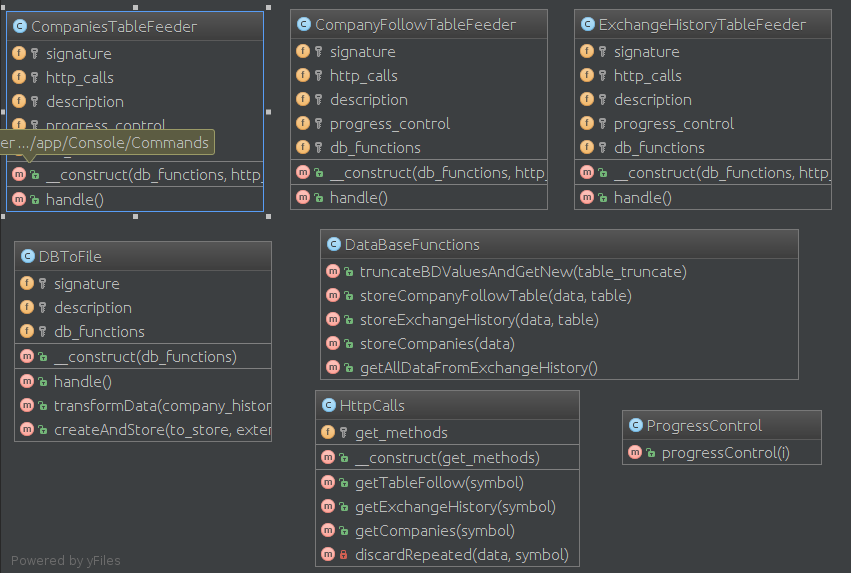

Laravel Market Information
Creat per Alex Bonavila
Wiki Projecte / GitHub
4 Pinzellades del projecte
LaravelMarketInformation és una aplicació web feta amb Laravel, aquesta aplicació el que fa es proveir d'informació financera, tant en temps real com històrica (amb 2 anys d'antiguitat), aquesta aplicació està pensada exclusivament per a clients registrats.
Objectius
- Extreure informació d'una api de terçers
- Mostrar la llista de les empreses en format taula
- Donar informació financera actualitzada
- Donar la informació històrica en format gràfic
- Poder descarregar la informació des de la web en diferents formats
- Tenir una Calculadora/Simulador capaç de guardar càlculs a la BD
- Poder consultar els càlculs guardats de la calculadora
Tecnologies, Dependències, Llenguatges, etc.
Llenguatges i Frameworks Backend
PHP i Laravel
Dependències i Llibreries Backend
Guzzle, laravel-ide-helper, laravel-debugbar, admin-lte, laravel-formatter i api-guard
Backend i frontend Test
coveralls, travis i scrutinizer
Llenguatges Frontend
HTML5, CSS3 i JS
Frameworks i Dependències Frontend
Chart.js, Gulp, laravel-elixir, bootstrap-sass i Vue.js
Bases de Dades
Diagrama EER BD
Diagrama Migracions
Exemple Migració
Exemple Model
Classes Backend i Bones Praqtiques
Comandes
Bones Practiques